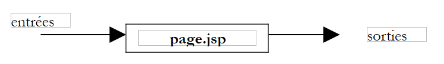
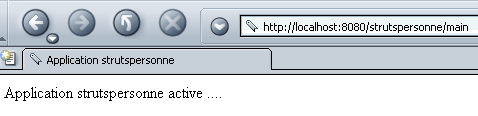
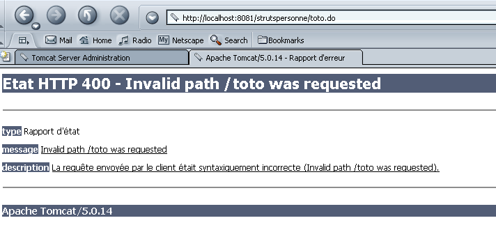

1. معلومات عامة
ملف PDF الخاص بالوثيقة متاح |HERE|.
1.1. الأهداف
نهدف هنا إلى اكتشاف طريقة تطوير تسمى STRUTS. Jakarta Struts هو مشروع تابع لمؤسسة Apache Software Foundation (www.apache.org) يهدف إلى توفير إطار عمل قياسي لتطوير تطبيقات الويب بلغة Java يتوافق مع البنية المعروفة باسم MVC (النموذج-العرض-المتحكم).
1.2. نموذج MVC
يسعى نموذج MVC إلى الفصل بين طبقات العرض والمعالجة والوصول إلى البيانات. وسيتم تصميم أي تطبيق ويب يتوافق مع هذا النموذج على النحو التالي:
 |
تُسمى هذه البنية بنية ثلاثية الأطراف أو ذات المستويات الثلاثة:
- واجهة المستخدم هي V (العرض)
- منطق التطبيق هو C (وحدة التحكم)
- مصادر البيانات هي M (النموذج)
غالبًا ما تكون واجهة المستخدم عبارة عن متصفح ويب، ولكنها قد تكون أيضًا تطبيقًا مستقلًا يرسل عبر الشبكة طلبات HTTP إلى خدمة الويب ويقوم بتنسيق النتائج التي ترسلها إليه. تتكون منطقية التطبيق من البرامج النصية التي تعالج طلبات المستخدم. غالبًا ما يكون مصدر البيانات قاعدة بيانات، ولكنه قد يكون أيضًا ملفات نصية بسيطة، أو دليلًا LDAP، أو خدمة ويب بعيدة،... ومن مصلحة المطور الحفاظ على استقلالية كبيرة بين هذه الكيانات الثلاثة بحيث إذا تغير أحدها، فلا يتعين على الاثنين الآخرين التغيير أو يتغيران قليلاً فقط.
وعند محاولة تطبيق هذا النموذج باستخدام السيرفلتات وصفحات JSP، نحصل على البنية التالية:
 |
في الكتلة [Logique Applicative]، نتميّز
- الخادم (servlet) الذي يمثل بوابة الدخول إلى التطبيق، ويُسمى أيضًا «وحدة التحكم»
- الكتلة [Classes métier] التي تضم فئات Java اللازمة لمنطق التطبيق.
- الكتلة [Classes d'accès aux données] التي تضم فئات Java اللازمة للحصول على البيانات المطلوبة للـservlet، وغالبًا ما تكون بيانات دائمة (BD، الملفات، الخدمة WEB، ...)
- كتلة الصفحات JSP التي تشكل طرق عرض التطبيق.
1.3. نهج تطوير MVC باستخدام السيرفلتات والصفحات JSP
لقد حددنا منهجية لتطوير تطبيقات الويب التي تعمل بلغة جافا تتوافق مع النموذج MVC السابق. ونستعرضها هنا.
- سنبدأ بتحديد جميع واجهات التطبيق. وهذه الواجهات هي صفحات الويب التي تُعرض على المستخدم. لذا سنضع أنفسنا في مكان المستخدم لرسم هذه الواجهات. ونميز بين ثلاثة أنواع من الواجهات:
- نموذج الإدخال الذي يهدف إلى الحصول على معلومات من المستخدم. ويحتوي هذا النموذج عادةً على زر لإرسال المعلومات المدخلة إلى الخادم.
- صفحة الرد التي لا تخدم سوى تقديم المعلومات للمستخدم. وغالبًا ما تحتوي هذه الصفحة على رابط يتيح للمستخدم متابعة التطبيق بصفحة أخرى.
- الصفحة المختلطة: أرسلت السيرفلت إلى العميل صفحة تحتوي على معلومات قامت بتوليدها. وستستخدم هذه الصفحة نفسها من قبل العميل لتزويد السيرفلت بمعلومات أخرى.
- سيؤدي كل عرض إلى إنشاء صفحة JSP. وبالنسبة لكل منها:
- سنقوم بتصميم مظهر الصفحة
- سنحدد الأجزاء الديناميكية فيها:
- المعلومات الموجهة للمستخدم والتي يجب أن توفرها السيرفلت كمعلمات للعرض JSP
- بيانات الإدخال التي يجب إرسالها إلى السيرفلت للمعالجة. ويجب أن تكون هذه البيانات جزءًا من نموذج HTML.
- يمكننا تمثيل عمليات الإدخال/الإخراج لكل عرض بشكل تخطيطي
 |
- المدخلات هي البيانات التي يجب أن توفرها الخدمة (servlet) للصفحة JSP إما في الطلب (request) أو في الجلسة (session).
- المخرجات هي البيانات التي يجب أن تزودها الصفحة JSP إلى السيرفلت. وهي جزء من نموذج HTML، وسيقوم السيرفلت باستردادها من خلال عملية من النوع request.getparameter(...).
- سنكتب كود Java/JSP لكل عرض. وسيكون في الغالب بالشكل التالي:
<%@ page ... %> // استيرادات الفئات الأكثر شيوعًا
<%!
// متغيرات مثيل الصفحة JSP (=عامة)
// لا يلزم إلا إذا كانت الصفحة JSP تحتوي على طرق تشترك في المتغيرات (نادر)
...
%>
<%
// استرداد البيانات المرسلة من قبل السيرفلت
// سواء في الطلب (request) أو في الجلسة (session)
...
%>
<html>
...
// سنحاول هنا تقليل كود جافا إلى الحد الأدنى
</html>
- يمكننا الآن الانتقال إلى الاختبارات الأولية. طريقة النشر الموضحة أدناه خاصة بخادم Tomcat:
- يجب إنشاء سياق التطبيق في ملف server.xml الخاص بـ Tomcat. يمكننا البدء باختبار هذا السياق. لنفترض أن C هو هذا السياق وDC هو المجلد المرتبط به. سننشئ ملفًا ثابتًا باسم test.html ونضعه في المجلد DC. بعد تشغيل Tomcat، سنطلب عبر متصفح الوصول إلى http://localhost:8080/DC/test.html في المجلد URL.
- يمكن اختبار كل صفحة JSP. إذا كانت إحدى الصفحات JSP تُسمى formulaire.jsp، فسيتم طلب الصفحة URL http://localhost:8080/DC/formulaire.jsp باستخدام متصفح. تتوقع الصفحة JSP قيمًا من السيرفلت الذي يستدعيها. وهنا يتم استدعاؤها مباشرةً، لذا لن تتلقى المعلمات المتوقعة. ولتمكين إجراء الاختبارات مع ذلك، سنقوم بأنفسنا في الصفحة JSP بتهيئة المعلمات المتوقعة باستخدام ثوابت. تسمح هذه الاختبارات الأولية بالتحقق من صحة بناء جمل الصفحات JSP.
- ثم نكتب كود السيرفلت. تحتوي هذه السيرفلت على طريقتين متميزتين تمامًا:
- طريقة init التي تُستخدم من أجل:
- استرداد معلمات تكوين التطبيق من ملف web.xml الخاص به
- إنشاء مثيلات لفئات الأعمال التي ستستخدمها لاحقًا، إذا لزم الأمر
- إدارة قائمة محتملة بأخطاء التهيئة التي سيتم إرجاعها إلى مستخدمي التطبيق في المستقبل. وقد تصل إدارة الأخطاء هذه إلى حد إرسال بريد إلكتروني إلى مسؤول التطبيق لإخطاره بوجود خلل
- الطريقة doGet أو doPost وفقًا للطريقة التي تتلقى بها السيرفلت معلماتها من العملاء. إذا كانت السيرفلت تدير عدة نماذج، فمن المستحسن أن يرسل كل منها معلومة تحدد هويته بشكل فريد. ويمكن تحقيق ذلك عن طريق سمة مخفية في النموذج من النوع <input type="hidden" name="action" value="...">. يمكن أن تبدأ الخدمة (servlet) بقراءة قيمة هذا المعامل ثم تفويض معالجة الطلب إلى طريقة داخلية خاصة مكلفة بمعالجة هذا النوع من الطلبات.
- يجب تجنب وضع كود الأعمال داخل السيرفلت قدر الإمكان. فهي ليست مصممة لهذا الغرض. السيرفلت هي بمثابة قائد فريق (وحدة تحكم) تتلقى الطلبات من عملائها (عملاء الويب) وتكلف الأشخاص الأكثر ملاءمة (فئات الأعمال) بتنفيذها. عند كتابة السيرفلت، يتم تحديد واجهة الفئات الخاصة بالأعمال التي سيتم كتابتها (منشئات، طرق). وذلك في حالة الحاجة إلى إنشاء هذه الفئات. أما إذا كانت موجودة بالفعل، فيجب أن تتكيف السيرفلت مع الواجهة الموجودة.
- سيتم ترجمة كود السيرفلت.
- سنقوم بكتابة الهيكل الأساسي للفئات المهنية اللازمة للـ servlet. على سبيل المثال، إذا كانت السيرفلت تستخدم كائنًا من النوع proxyArticles، وكان على هذه الفئة أن تحتوي على طريقة getCodes تُرجع قائمة (ArrayList) من سلاسل الأحرف، فيمكننا الاكتفاء في البداية بكتابة:
public ArrayList getCodes(){
String[] codes= {"code1","code2","code3"};
ArrayList aCodes=new ArrayList();
for(int i=0;i<codes.length;i++){
aCodes.add(codes[i]);
}
return aCodes;
}
- يمكننا الآن الانتقال إلى اختبارات السيرفلت.
- يجب إنشاء ملف التكوين web.xml الخاص بالتطبيق. يجب أن يحتوي على جميع المعلومات التي تتوقعها طريقة init الخاصة بالسيرفلت (<init-param>). علاوة على ذلك، يتم تعيين URL الذي سيتم من خلاله الوصول إلى السيرفلت الرئيسي (<servlet-mapping>).
- يتم وضع جميع الفئات الضرورية (الخادم الصغير، فئات الأعمال) في WEB-INF/classes.
- يتم وضع جميع مكتبات الفئات (.jar) الضرورية في WEB-INF/lib. قد تحتوي هذه المكتبات على فئات متخصصة، وبرامج تشغيل JDBC، ...
- يتم وضع طرق العرض (JSP) في جذر التطبيق أو في مجلد خاص بها. ونفعل الشيء نفسه بالنسبة للموارد الأخرى (ملفات HTML، الصور، الصوت، مقاطع الفيديو، ...)
- وبعد الانتهاء من ذلك، يتم اختبار التطبيق وتصحيح الأخطاء الأولية. في نهاية هذه المرحلة، تصبح بنية التطبيق جاهزة للعمل. قد تكون مرحلة الاختبار هذه صعبة نظرًا لعدم توفر أداة تصحيح أخطاء مع Tomcat. ولهذا الغرض، يجب أن يكون Tomcat نفسه مدمجًا في أداة تطوير (Jbuilder Developer، Sun One Studio، ...). يمكن الاستعانة بالتعليمات System.out.println("....") التي تكتب في نافذة Tomcat. أول ما يجب التحقق منه هو أن الطريقة init تسترد بالفعل جميع البيانات الواردة من الملف web.xml. وللقيام بذلك، يمكن كتابة قيم هذه البيانات في نافذة Tomcat. وبنفس الطريقة، نتحقق من أن الطريقتين doGet و doPost تستردان بشكل صحيح معلمات النماذج المختلفة HTML الخاصة بالتطبيق.
يتم كتابة فئات الأعمال التي تحتاجها السيرفلت. ويتضمن ذلك عادةً عملية التطوير التقليدية لفئة جافا، والتي غالبًا ما تكون مستقلة عن أي تطبيق ويب. وسيتم اختبارها أولاً خارج هذه البيئة، باستخدام تطبيق وحدة التحكم على سبيل المثال. وعند الانتهاء من كتابة فئة الأعمال، يمكن دمجها في بنية نشر تطبيق الويب واختبار مدى صحة تكاملها فيه. وسنتبع هذا الإجراء مع كل فئة وظيفية.
1.4. نهج التطوير STRUTS
سعى مبتكرو منهجية STRUTS إلى تحديد طريقة تطوير قياسية تتوافق مع بنية MVC لتطبيقات الويب المكتوبة بلغة جافا. يتضمن مشروع STRUTS جانبين:
- طريقة التطوير. سنرى أنها قريبة إلى حد كبير من تلك الموصوفة أعلاه بالنسبة للسيرفلتات وصفحات الويب JSP
- الأدوات التي تسمح لنا بتطبيق طريقة التطوير هذه. وهي عبارة عن مكتبات لفئات Java متوفرة على موقع مؤسسة Apache (www.apache.org).
1.4.1. طريقة التطوير
البنية MVC التي يستخدمها STRUTS هي كما يلي:
 |
- تعد وحدة التحكم (Controller) قلب التطبيق. تمر جميع طلبات العميل عبرها. وهي عبارة عن سيرفلت عامة مقدمة من STRUTS. قد نضطر في بعض الحالات إلى إنشاء مشتق منها. أما في الحالات البسيطة، فهذا ليس ضروريًا. تستمد هذه السيرفلت العامة المعلومات التي تحتاجها من ملف يُسمى غالبًا struts-config.xml.
- إذا احتوى طلب العميل على معلمات نموذج، يتم وضعها في كائن Bean. يُطلق على الفئة اسم «فئة من نوع Bean» إذا كانت تتبع قواعد الإنشاء التي سنستعرضها لاحقًا. يتم تخزين كائنات Bean التي يتم إنشاؤها بمرور الوقت في جلسة العمل أو في طلب العميل. هذه النقطة قابلة للتكوين. ولا يلزم إعادة إنشائها إذا كانت قد تم إنشاؤها مسبقًا.
- في ملف التكوين struts-config.html، يتم ربط معلومات معينة بكل URL يجب معالجته برمجيًا (وبالتالي لا يتطابق مع عرض JSP يمكن طلبه مباشرةً):
- اسم فئة Action المسؤولة عن معالجة الطلب. وهنا أيضًا، يمكن الاحتفاظ بمثيل كائن Action في الجلسة أو في الطلب.
- إذا كانت URL المطلوبة معدة بمعلمات (كما في حالة إرسال نموذج إلى وحدة التحكم)، يُشار إلى اسم «البيان» (bean) المسؤول عن تخزين معلومات النموذج.
- وبفضل هذه المعلومات المقدمة من ملف التكوين الخاص به، عند استلام طلب URL من أحد العملاء، يصبح وحدة التحكم قادرة على تحديد ما إذا كان هناك «بين» يجب إنشاؤه، وأي «بين» بالضبط. وبمجرد إنشاء مثيل «البين»، يمكنه التحقق من صحة البيانات التي خزنها والتي تأتي من النموذج. يتم استدعاء طريقة في «البيان» تُسمى validate تلقائيًّا بواسطة وحدة التحكم. يتم إنشاء «البيان» بواسطة المطور. لذا، يضع المطور في طريقة validate الكود الذي يتحقق من صحة بيانات النموذج. إذا تبين أن البيانات غير صالحة، فلن تواصل وحدة التحكم العملية. بل ستقوم بتمرير زمام الأمور إلى عرض سيجد اسمه في ملف التكوين الخاص به. وبذلك ينتهي التبادل. تجدر الإشارة إلى أنه يمكن للمطور أن يطلب عدم التحقق من صحة النموذج. وقد فعل ذلك أيضًا في الملف struts-config.html. في هذه الحالة، لا يستدعي وحدة التحكم طريقة validate الخاصة بـ bean.
- إذا كانت بيانات الكائن صحيحة، أو في حالة عدم وجود تحقق، أو في حالة عدم وجود كائن، يقوم وحدة التحكم بتمرير زمام الأمور إلى الكائن من نوع Action المرتبط بـ URL. ويقوم بذلك عن طريق طلب تنفيذ طريقة execute الخاصة بهذا الكائن، حيث يمرر إليها مرجع الكائن (Bean) الذي قام بإنشائه إن وجد. وهنا يقوم المطور بما عليه القيام به: فقد يضطر إلى استدعاء فئات الأعمال أو فئات الوصول إلى البيانات. في نهاية المعالجة، يعيد كائن Action إلى وحدة التحكم اسم العرض الذي يجب إرساله كاستجابة إلى العميل.
- يقوم وحدة التحكم بإرسال هذا الرد. وبذلك ينتهي التبادل مع العميل.
تبدأ منهجية التطوير STRUTS في التبلور:
- تعريف العروض. يتم التمييز بين العروض التي تمثل نماذج والعروض الأخرى.
- كل عرض نموذج يؤدي إلى تعريف في الملف struts-config.xml. يتم فيه تحديد المعلومات التالية:
- اسم فئة Bean التي ستحتوي على بيانات النموذج، بالإضافة إلى تحديد ما إذا كان يجب التحقق من صحة البيانات أم لا. إذا كان يجب التحقق منها وتبين أنها غير صالحة، فيجب تحديد العرض الذي سيتم إرساله كاستجابة للعميل في هذه الحالة.
- اسم فئة Action المسؤولة عن معالجة النموذج.
- اسم جميع العروض التي يمكن إرسالها ردًا على العميل بمجرد معالجة الطلب. وستختار فئة Action إحداها وفقًا لنتيجة المعالجة.
- كل عرض يمثل صفحة JSP. سنرى أنه في العروض، ولا سيما عروض النماذج، يتم أحيانًا استخدام مكتبة علامات خاصة بـ Struts.
- كل عرض نموذج يؤدي إلى تعريف في الملف struts-config.xml. يتم فيه تحديد المعلومات التالية:
- كتابة فئات Javabean المقابلة لعروض النماذج
- كتابة فئات Action المسؤولة عن معالجة النماذج
- كتابة فئات الأعمال أو فئات الوصول إلى البيانات، إن وجدت
1.4.2. أدوات التطوير STRUTS
يُعد مشروع STRUTS أحد مشاريع مؤسسة Apache Software Foundation. وقد تم تجميع العديد من هذه المشاريع تحت اسم Jakarta، وهي متاحة على الموقع http://jakarta.apache.org:

يُنصح بقراءة هذه الصفحة. هناك العديد من المشاريع التي تهم مطوري Java. إذا اتبعنا الرابط Struts أعلاه، فسنصل إلى الصفحة الرئيسية للمشروع:

هنا أيضًا، يُنصح بقراءة الصفحة الرئيسية. لتنزيل مكتبات جافا الخاصة بـ Struts، نضغط على الرابط «Binaries» أعلاه:

بالنسبة لمستخدمي نظام Windows، سنستخدم الرابط 1.1.zip، أما بالنسبة لمستخدمي نظام Unix فسنستخدم الرابط 1.1.tar.gz (نوفمبر 2003). بمجرد فك ضغط الملف 1.1.zip، نحصل على الهيكل التالي:

توجد في هذه البنية الشجرية مكتبات فئات Java اللازمة للتطوير STRUTS. وتوجد هذه المكتبات في ملفات .jar أو .war، وهي ملفات مشابهة لملفات .zip. ويمكن فتحها باستخدام نفس الأدوات المساعدة. وتوجد معظم المكتبات اللازمة في المجلد lib أعلاه:

بالإضافة إلى مكتبات الفئات بتنسيق .jar، توجد ملفات .dtd (تعريف نوع المستند) التي تحتوي على قواعد صحة ملفات XML. ويمكن لملف XML أن يشير في محتواه إلى ملف من هذا النوع مثل DTD. سيستخدم البرنامج (المسمى «المحلل») الذي يحلل محتوى الملف XML قواعد الصحة الموجودة في الملف DTD المشار إليه لتحديد ما إذا كان الملف XML صحيحًا من الناحية النحوية. وهكذا، على سبيل المثال، يحدد الملف struts-config_1_1.dtd قواعد إنشاء ملف التكوين struts-config.xml للإصدار 1.1 من Struts.
لنرى الآن أين يجب وضع العناصر المختلفة في شجرة Struts لنشر تطبيق Struts داخل خادم Tomcat.
1.5. نشر تطبيق Struts
تطبيق Struts هو تطبيق ويب كأي تطبيق آخر. ولذلك فإنه يتبع قواعد النشر الخاصة بالحاوية التي يتم تشغيله فيها. هنا، سيتم تشغيل تطبيق، سنسميه strutspersonne، بواسطة خادم Tomcat الإصدار 4.x. وستجد في الملحق طريقة النشر الخاصة بـ Tomcat الإصدار 5.x. نحن نتبع هنا قواعد النشر الخاصة بـ Tomcat 4.x:
- نقوم بتعريف سياق «strutspersonne» في ملف التكوين server.xml الخاص بـ Tomcat:
بعد الانتهاء من ذلك، نعيد تشغيل Tomcat إذا لزم الأمر حتى يأخذ السياق الجديد في الاعتبار. يمكننا التحقق من صحة السياق عن طريق طلب URL http://localhost:8080/strutspersonne:

إذا لم تظهر لنا صفحة أخطاء، فهذا يعني أن السياق صحيح.
- نقوم بإنشاء المجلد الفرعي WEB-INF في المجلد الفعلي المرتبط بسياق strutspersonne.
- في المجلد WEB-INF الخاص بالتطبيق، نقوم بتعريف ملف التكوين web.xml الخاص بالتطبيق:
<?xml version="1.0" encoding="ISO-8859-1"?>
<!DOCTYPE web-app
PUBLIC "-//Sun Microsystems, Inc.//DTD Web Application 2.3//EN"
"http://java.sun.com/dtd/web-app_2_3.dtd">
<web-app>
<servlet>
<servlet-name>action</servlet-name>
<servlet-class>org.apache.struts.action.ActionServlet</servlet-class>
<init-param>
<param-name>config</param-name>
<param-value>/WEB-INF/struts-config.xml</param-value>
</init-param>
</servlet>
<servlet-mapping>
<servlet-name>action</servlet-name>
<url-pattern>*.do</url-pattern>
</servlet-mapping>
</web-app>
- فئة وحدة التحكم (servlet) الخاصة بالتطبيق هي فئة محددة مسبقًا في Struts، وتسمى ActionServlet. وهي موجودة في الملف struts.jar. ولكي يتمكن Tomcat من العثور على هذه الفئة، سنضع ملف struts.jar في المجلد <tomcat>\common\lib، وهو أحد المجلدات التي يبحث فيها Tomcat عند البحث عن الفئات. في الواقع، سنضع فيه جميع ملفات .jar الموجودة في المجلد <struts>\lib، حيث يمثل <struts> المجلد الجذر لشجرة Struts.

- سنضع أيضًا الملفين struts-el.jar و jstl.jar الموجودين في <struts>\contrib\struts-el\lib:

- هنا، لدينا إمكانية الوصول إلى خادم الويب. وهذا ليس هو الحال دائمًا. إذا تم نشر تطبيق ويب/جافا في حاوية ويب لا نديرها بأنفسنا، فمن الأفضل أن يضم التطبيق جميع المكتبات التي يحتاجها. ويجب عندئذٍ وضعها في المجلد WEB-INF/lib الذي يجب إنشاؤه.
- لقد أشرنا إلى أن وحدة التحكم تحتاج إلى عدد معين من المعلومات التي تجدها عادةً في ملف struts-config.xml الموجود في نفس المجلد الذي يوجد فيه ملف web.xml. في الواقع، يمكن تخصيص اسم هذا الملف. والمعلمة config المذكورة أعلاه هي التي تحدد هذا الاسم.
- تشير العلامة <servlet-mapping> إلى أن وحدة التحكم سيتم الوصول إليها عبر جميع ملفات URL التي تنتهي باللاحقة .do. وهذا الربط مطلوب من قبل Struts. سيتم بعد ذلك تصفية ملفات URL هذه بواسطة وحدة التحكم التي لن تقبل سوى ملفات URL المُعلنة في ملف التكوين الخاص بها struts-config.xml
في الوقت الحالي، يكفي ملفنا web.xml.
- سنطلب URL /main.do من تطبيق strutspersonne. استنادًا إلى ملف web.xml السابق، سيتم إرسال ملف URL هذا إلى السيرفلت org.apache.struts.action. سيتم إنشاء مثيل للفئة ActionServlet واستدعاء أسلوبها init. يحاول هذا الأسلوب قراءة ملف التكوين المحدد بواسطة المعلمة config. لذا يجب أن يكون هذا الملف موجودًا. نقوم بإنشاء الملف struts-config.xml التالي:
<?xml version="1.0" encoding="ISO-8859-1" ?>
<!DOCTYPE struts-config PUBLIC
"-//Apache Software Foundation//DTD Struts Configuration 1.1//EN"
"http://jakarta.apache.org/struts/dtds/struts-config_1_1.dtd">
<struts-config>
<action-mappings>
<action
path="/main"
parameter="/main.html"
type="org.apache.struts.actions.ForwardAction"
/>
</action-mappings>
</struts-config>
تجدر الإشارة إلى أن الملف DTD الخاص بـ struts-config.xml يختلف عن الملف web.xml، مما يشير إلى أن هذين الملفين لا يتشاركان في نفس البنية. لكل ملف URL يتعين على وحدة التحكم معالجته، يتعين علينا تعريف علامة <action>. وتُستخدم هذه العلامة لإرشاد وحدة التحكم إلى الإجراء الذي يجب عليها اتخاذه عند طلب ملف URL هذا. وهنا، نحدد العناصر التالية:
- path="/main": يحدد مسار URL الذي تم تكوينه بواسطة العلامة <action>. اللاحقة .do ضمنية.
- type="org.apache.struts.actions.ForwardAction": يحدد اسم فئة Action التي يجب أن تعالج الطلب. هنا، نستخدم فئة Action محددة مسبقًا في Struts. وهي لا تقوم بأي شيء بنفسها، بل تقوم بتوجيه طلب العميل إلى URL المحددة في السمة parameter.
- parameter="/main.html": اسم ملف URL الذي يجب توجيه الطلب إليه. وهو هنا ملف HTML ثابت.
باختصار، عندما يطلب المستخدم ملف URL /main.do، سيحصل على ملف URL /main.html.
- وسيكون ملف main.html كما يلي:
<html>
<head>
<title>Application strutspersonne</title>
</head>
<body>
Application strutspersonne active ....
</body>
</html>
يتم وضع هذا الملف في مجلد التطبيق strutspersonne/vues:

يمكن طلبه مباشرةً باستخدام URL http://localhost:8080/strutspersonne/main.html:

هنا، لم يتدخل عنصر التحكم Struts الخاص بالتطبيق لأنه لا يتدخل إلا عند طلب URL من النوع *.do. أما هنا، فقد تم طلب URL /vues/main.html.
- يجب وضع الملف struts-config.xml الذي تم إنشاؤه سابقًا في نفس المجلد WEB-INF الذي يوجد فيه الملف web.xml:
- سنقوم الآن بالتحقق من عمل وحدة التحكم في تطبيق strutspersonne بشكل صحيح عن طريق طلب الملفين URL /main.do بعد إعادة تشغيل Tomcat، إذا لزم الأمر.

هنا تدخلت وحدة التحكم Struts لأننا طلبنا صفحة من نوع *.do (URL). وقد حصلنا بالفعل على الصفحة المتوقعة (main.html). وبذلك يكون لدينا العناصر الأساسية لتشغيل تطبيقنا: سياق strutspersonne، وملفات التكوين web.xml و struts-config.xml، ومكتبات Struts.
ماذا كان سيحدث لو طلبنا ملفًا من نوع /toto.do باسم URL؟ وفقًا لملف web.xml الخاص بتطبيق strutspersonne، يتم عندئذٍ استدعاء وحدة التحكم Struts لمعالجته. ثم يبحث هذا المتحكم في ملف التكوين الخاص به struts-config.html ولا يجد أي تكوين لـ URL /toto. ماذا يفعل إذن؟ لنجرب:

نحصل على صفحة أخطاء، وهو ما يبدو طبيعيًا. يمكننا الآن البدء في كتابة تطبيق.